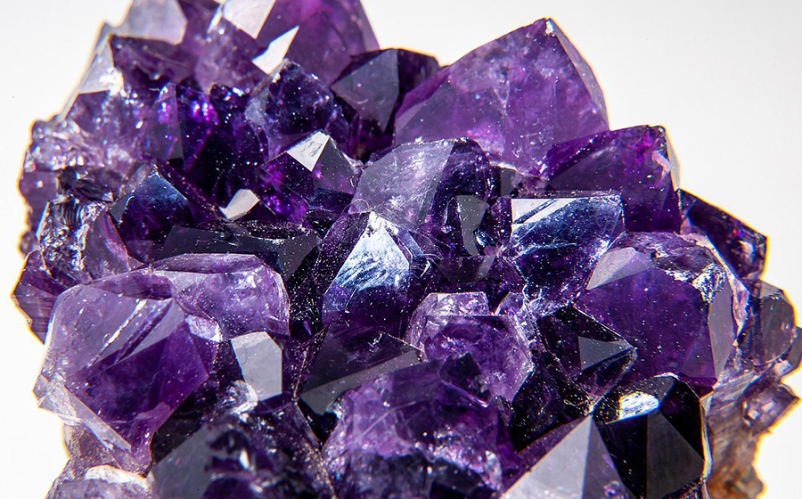

化学式
(Ca[Al2Si2O8])50~70+(Na[AlSi3O8])50~30
アメジストは、その化学式で示されるようにカルシウムとナトリウムを含む多様な組成を持ちます。この鉱物は、鉄分が含まれることで特有の紫色を呈し、その美しい色合いは多くの人々に愛されています。
宝石言葉・石言葉
「誠実」「平和」「心の平穏」「直感力」
(Ca[Al2Si2O8])50~70+(Na[AlSi3O8])50~30
アメジストは、その化学式で示されるようにカルシウムとナトリウムを含む多様な組成を持ちます。この鉱物は、鉄分が含まれることで特有の紫色を呈し、その美しい色合いは多くの人々に愛されています。
「誠実」「平和」「心の平穏」「直感力」
ブラジル、ウルグアイ、アフリカ、ロシア等ア
アメジストは、2月の誕生石として知られ、その美しい紫色が特徴です。この色は古代ギリシャでは神聖な色とされ、宝石の中でも特に高貴なものとされてきました。
アメジストは、クリスタルクォーツの一種で、多くは透明感のある紫色をしています。その色調は淡いラベンダー色から深い紫色までさまざまで、紫色の中でも特に豊かな色合いが評価されています。
アメジストは、精神的な平和や知恵をもたらすとされ、持ち主に安らぎと清らかな気持ちをもたらすと信じられています。また、身につけることでクリエイティブなエネルギーを高め、直感力を促進する助けにもなるとされています。
アメジストは、精神的な平和を求める人、直感力を高めたい人、クリエイティブなエネルギーを増したい人に特におすすめです。この石を持つことで、自分自身の心を安らぎ、ポジティブなエネルギーを引き出す助けとなるでしょう。